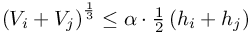
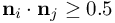

Simulate with complex geometries and complex physics
ISOLATEDPOINTS_ClusterOnResultingVolume
threshold to cluster two isolated points into one
Default: ISOLATEDPOINTS_ClusterOnResultingVolume = 0.0
Isolated points do not have neighbors, they are marked by the value %ORGANIZE_IsIsolated% in the variable Y%ind_Organize%. If two isolated points (index i and j) come close to each other (distance is less than dist_rip * Y%ind_h%), then they may be clustered to one point, if the resulting volume is small enough. That is
- the resulting volume fulfills , where
 represents the value of ISOLATEDPOINTS_ClusterOnResultingVolume
represents the value of ISOLATEDPOINTS_ClusterOnResultingVolume
- their normals agree in the sense 
| This item is referenced in: | |
|---|---|
| ISOLATEDPOINTS_ClusterOnResultingVolume | threshold to cluster two isolated points into one |
| Beta | Release notes for the MESHFREE beta executables |
| Stable | Release notes for the MESHFREE stable executables |